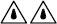

| Schutzart | Kennziffer des Schutzgrades | Symbol in Anlehnung an VDE 0713- 1 | |
| Schutz gegen Fremdkörper und Staub | Fremdkörper > 50 mm | IP 1X | |
| Fremdkörper > 12 mm | IP 2X | ||
| Fremdkörper > 2,5 mm | IP 3X | ||
| Fremdkörper > 1,0 mm | IP 4X | ||
| keine Staubablagerung | IP 5X | ||
| Kein Staubeintritt | IP 6X | ||
| Schutz gegen Nässe | Tropfwasser senkrecht | IP X1 | |
| Tropfwasser schräg | IP X2 | ||
| Sprühwasser | IP X3 | ||
| Spritzwasser | IP X4 | ||
| Strahlwasser | IP X5 |  |
|
| starkes Strahlwasser | IP X6 | ||
| zeitweiliges Untertauchen (wasserdicht) | IP X7 | ||
| dauerndes Untertauchen (druckwasserdicht) ( __ m Tauchtiefe) | IP X8 | ||
| geschützt gegen Hochdruck und hohe Strahlwassertemperaturen | IP X9 | ||